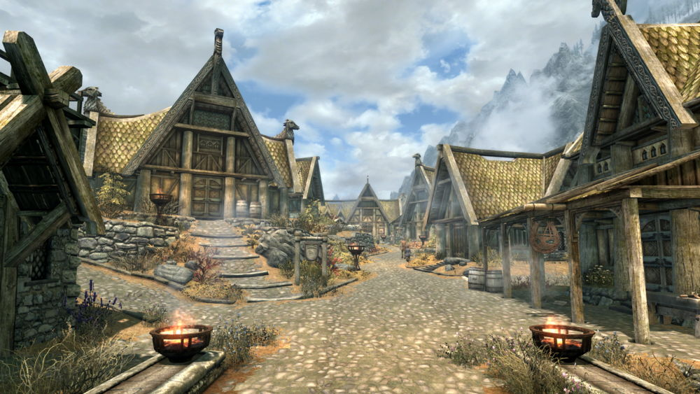
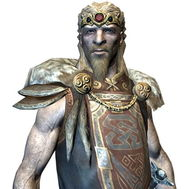
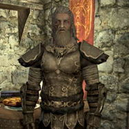
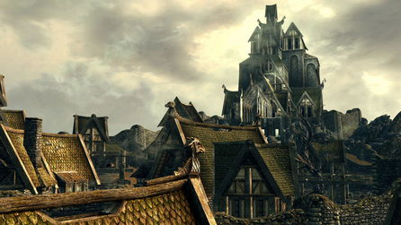
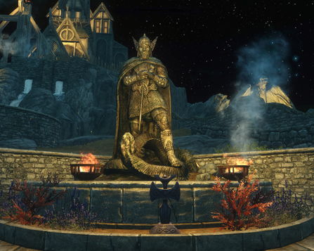
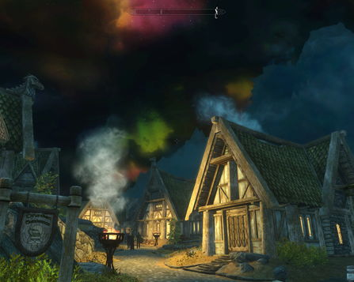

"Этот город расположен почти в самом центре Скайрима, что хорошо, ведь до него можно довольно быстро добраться из любого места. Раскинувшийся на скалистом холме Вайтран возвышается над окружающими его зелёными лугами. Высокие деревянные стены охраняют его жителей от волков, мамонтов и прочих опасностей извне"— «Вайтран: путеводитель для джентльменов»

Вайтран — один из пяти крупнейших городов Скайрима. Расположен на равнине, занятой тундрой. Является столицей, находящейся в восточной части одноимённого владения. Город разделён на три района: Равнинный, Ветреный и Облачный. Рынок, торговые лавки, таверны, казармы стражи города и доступный для покупки Дом тёплых ветров находятся в Равнинном районе. В Ветреном районе располагаются храм Кинарет, зал мёртвых, Йоррваскр, Небесная кузница, статуя Талоса и местная достопримечательность — священное дерево Златолист. Жители живут в обеих частях города. На вершине холма, в так называемом Облачном районе, возвышается Драконий Предел, где проживает ярл и его свита. Там же находится и тюрьма. В целом жизнь жителей города проста и сурова. Укрепления, деревянные и каменные стены, частокол и преимущество позиции на большом утёсе, который возвышается над окружающей город степью, надёжно защищают от диких зверей и бандитов.
Вайтран был основан 22-мя Соратниками из Пяти сотен Исграмора под предводительством капитана Йика Речного.Соратники построили рядом с Небесной кузницей большой пиршественный зал, Йоррваскр, который долгое время был единственным строением на склоне горы. Сам город Вайтран был построен около Йоррваскра, который привлекал воинов со всего Тамриэля. Теперь Вайтран — большой город, в котором сохраняется атмосфера маленькой нордской деревни. Географическое расположение и лёгкий доступ делают его одним из самых успешных городов в торговле. В окружении Вайтрана доминирующее положение занимает высокая крепость — Драконий Предел. Его историю можно проследить до Первой эры, когда король Олаф Одноглазый покорил великого дракона Нуминекса в легендарной дуэли криков на вершине горы Антор и вернулся с пленным драконом в молодой город. Тогда небольшое здание было перестроено в великолепную крепость, чтобы использовать её в качестве клетки для Нуминекса, и соответственно переименовано. Голова дракона до сих пор украшает зал Драконьего Предела.Город является домом для двух больших кланов: Серых Грив и Сынов Битвы. Когда-то они были хорошими друзьями, но теперь являются злейшими врагами вследствие разных взглядов на гражданскую войну, а также экономического неравенства. Сыны Битвы — богаты, тогда как Серые Гривы — бедны.
Администрация | Гильдии |
Драконий Предел | Йоррваскр |
| Балгруф Старший, ярл | Кодлак Белая Грива, предвестник Соратников |
|  |  |
| Фаренгар Тайный Огонь, придворный маг | Скьор |
| Эйла Охотница | |
|  |  |  |
| Вид на драконий предел | Статуя Талоса | Вид на небо |